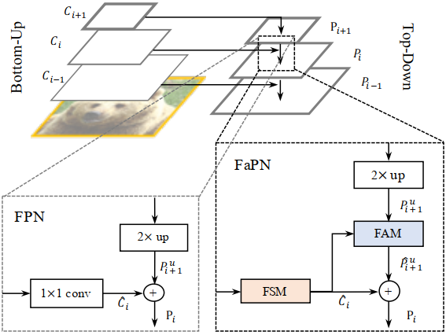
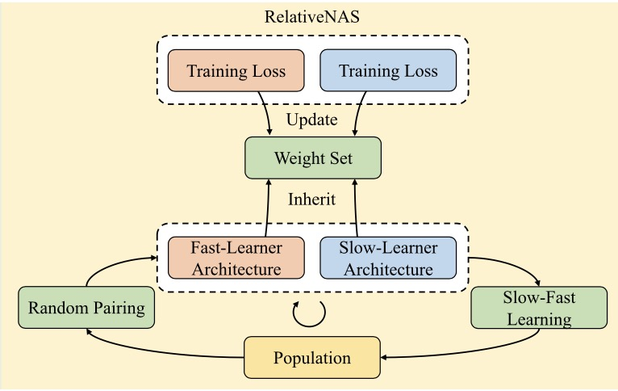
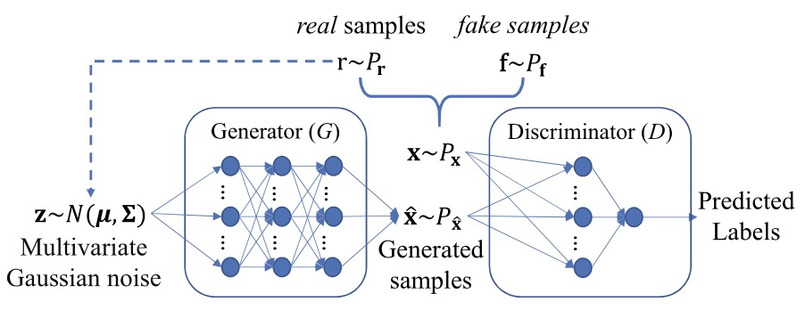

|
Shihua Huang (黄世华)
Shihua Huang is currently a PhD candidate with the Dept. of Computing at Hong Kong Polytechnic University, Hong Kong, China.
His research interests are in the field of representation learning, notably neural architecture search, deep learning assisted evolutionary algorithms,
and in particular dense image prediction (auto-driving and medical image analysis).
Email /
CV /
Bio /
Google Scholar /
Github
|
|
|

|
FaPN: Feature-aligned Pyramid Network for Dense Image Prediction
Shihua Huang,
Zhichao Lu,
Ran Cheng,
Cheng He
ICCV, 2021
project page /
arXiv /
code
FaPN is a simple yet effective top-down pyramidal architecture to generate multi-scale features for dense image prediction.
It improves FPN's AP / mIoU by 1.5 - 2.6% on all tasks. It achieved 56.7% mIoU over ADE20k-150 when paired with MaskFormer.
|
|

|
RelativeNAS: Relative Neural Architecture Search via Slow-Fast Learning
Hao Tan,
Ran Cheng,
Shihua Huang,
Cheng He
Changxiao Qiu
Fan Yang
Ping Luo
TNNLS , 2021
arXiv /
code
|
|

|
Evolutionary Multi-Objective Optimization Driven by Generative Adversarial Networks (GANs)
Cheng He,
Shihua Huang,
Ran Cheng,
Kay Chen Tan
Yaochu Jin
TCYB , 2020
arXiv /
code
|
|
Reviewer: IEEE Trans. on Multi Media, IEEE Trans. on Cognitive and Developmental Systems,
Applied Soft Computing, and Complex & Intelligent Systems.
|
|
{kind=link}